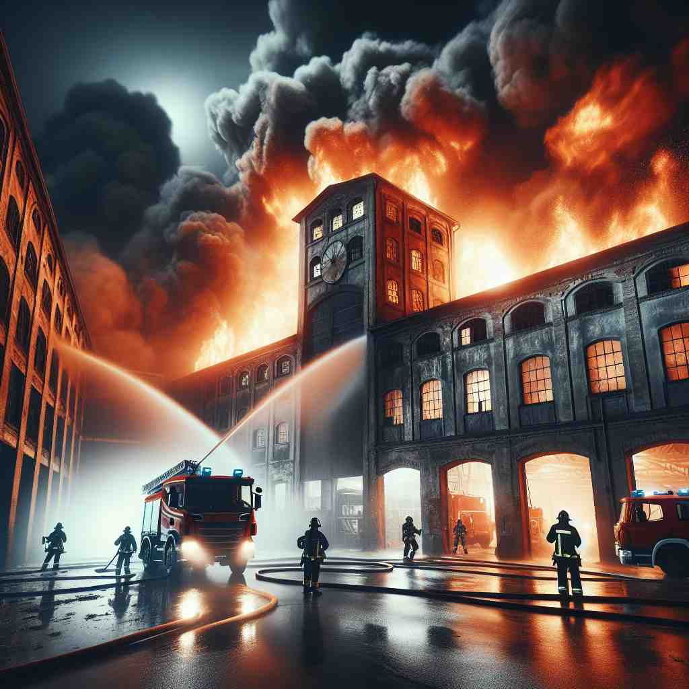

💬 The campers sat around the warm campfire fire, sharing stories.
💬 Let's fire up the grill for a barbecue party.

💬 The firefighters are trying to put out the fire in the building.

💬 We like to sit by the fire and talk at night.
🔈 ['faɪə]
🗝️ n. the state of burning that produces heat and light
🖼️ 在一个寒冷的冬夜，一家人围坐在客厅的壁炉旁。熊熊燃烧的火焰发出温暖的光芒，驱散了周围的寒冷。这种场景形象展示了‘fire’作为燃烧状态带来的热量和光明。
🔍 想象'fire'是一团燃烧的火焰，它产生热量和光芒。从这个核心概念出发，我们可以理解'fire'的其他含义：武器发射时产生类似火的效果；解雇某人就像将其'烧掉'；批评如同火焰般具有攻击性；热情和激情如火一般炽热；激励他人就像点燃火焰。通过这个核心意象，你可以更容易理解和记忆'fire'的多重含义。
💬 The campers sat around the warm campfire fire, sharing stories.
💬 Let's fire up the grill for a barbecue party.
💬 The firefighters are trying to put out the fire in the building.
💬 We like to sit by the fire and talk at night.
🌳 这个单词是一个基本词，没有分解为词根、前缀或后缀。它主要表示与火有关的概念，如火焰、失火、开火（射击）等。
💡 记忆 'fire' 时，可以联想炎热的火焰和明亮的红色，想象熊熊燃烧的场景来加深印象，让词义与视觉形象相结合。
🗝️ v. to discharge a weapon
🖼️ 在一个充满紧张气氛的战场上，士兵们端起步枪，瞄准远处的目标。指挥官一声令下，士兵们齐齐开火，射出子弹。这一刻，‘fire’作为武器开火的含义得到了生动的体现。
💬 The soldiers were ordered to fire their guns.
❓ 枪支发射时产生火光和热量，类似于火的效果
🗝️ v. to dismiss someone from a job
🖼️ 在一个现代化的办公室内，经理与一位员工进行严肃的谈话。他遗憾地告诉员工，因为公司重组，不得不让他离职。员工带着失望离开办公室，展示了‘fire’表示解雇的含义。
💬 The company had to fire several employees due to budget cuts.
❓ 比喻将人"烧掉"或"烧光"，使其离开工作岗位
🗝️ n. strong criticism or verbal attack
🖼️ 在一场激烈的辩论中，参赛者们持续不断地对对手的观点发起猛烈的批评和质疑。这种唇枪舌剑正是‘fire’作为口头攻击或批评的生动表现。
💬 The politician came under fire for his controversial comments.
❓ 比喻言语如火一般具有攻击性和破坏力
🗝️ n. enthusiasm or passion
🖼️ 在一个音乐会上，主唱充满活力地在舞台上表演，音乐带动着全场观众的情绪。观众眼中闪烁着激情的光芒，正是‘fire’作为热情的象征。
💬 The young athlete's eyes were full of fire as he competed.
❓ 比喻热情如火一般炽热
🗝️ v. to stimulate or inspire
🖼️ 在一间充满创意的画室里，艺术老师展示了一幅激动人心的名画，学生们被深深打动，纷纷在自己的画布上进行创作。这种受启发的时刻，体现了‘fire’作为激发灵感的含义。
💬 The coach's speech fired up the team before the big game.
❓ 比喻点燃某人的热情，如同点燃火焰